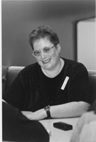

SEDGWICK SENSE AND SENSIBILITY: AN INTERVIEW WITH EVE KOSOFSKY SEDGWICKby Mark Kerr and Kristin O'Rourke
On January 19, 1995, Eve Kosofsky Sedgwick, the preeminent theorist of the textual epistemologies of gay and lesbian experience, came to UCSB to deliver a lecture on the work of Gary Fisher and graciously spared the time to meet with us. We would like to thank Madelyn Detloff and William Stern for their creative contributions to this interview.
Eve Kosofsky Sedgwick has been a professor in the English department at Duke University since 1988, taking a brief intermission during the 1991-1992 school year as a Fellow at the National Humanities Center, and the summer of 1992 at the School of Criticism and Theory at Dartmouth College. Since 1992, she has been the Newman Ivey White Professor of English at Duke. Following the completion of her graduate studies at Yale University, she taught courses in English, creative writing, and gender studies at many universities including the University of California Berkeley, Amherst College, Boston University, Hamilton College and Cornell University. She has authored numerous articles for publication in journals such as Critical Inquiry, Discourse, Genders, Zone, and the Yale Journal of Criticism, many of which have been anthologized in The Cultural Studies Reader, The Lesbian and Gay Studies Reader, Feminisms: Gender and Literary Studies, among others. Her books include Tendencies, [Duke University Press, 1993], Epistemology of the Closet [University of California Press, 1991, a Centennial Book], and the groundbreaking Between Men: English Literature and Male Homosocial Desire [Columbia University Press, 1985]. She has recently published her first volume of poetry, Fat Art, Thin Art [Duke University Press, 1994], and co-edited with Andrew Parker an anthology entitled Performativity and Performance [Routledge, 1995]. Her most current collaboration, with Adam Frank, is the just published four-volume Shame and its Sisters: A Silvan Tomkins Reader [Duke University Press, 1995].
Mark Kerr: In Epistemology of the Closet you suggest that the homo/heterosexual crisis, a definition that shapes western concerns about identity and social organization, is endemically male. Since its publication in 1990, have you thought more about what the Epistemology of the Closet would mean from a lesbian perspective? Is your reading of Diderot's The Nun in Tendencies an attempt to do that?
Eve Kosofsky Sedgwick: Well I don't think I was meaning to suggest that; I tried to be careful in the introduction to Epistemology in saying that I wasn't offering an answer a priori, and in fact I thought there probably couldn't be an a priori answer, to how much the things I was suggesting about male homo/hetero definition might also be useful points of departure for female homo/heterosexual definition. I really meant that. I've tried in a lot of ways to write about women's eroticism, not just in Diderot but in Jane Austen, in Willa Cather, in myself, and I haven't found that particular set of categories as directly applicable in writing about women as in writing about men; it seems to me that other people haven't either. Not to say that they can't be of some use, but I don't myself have the sense that the map of female sexuality is defined by the homo-hetero issue quite as primarily as the map of male sexual definition is. My own impression, and this is part of what I was talking about explicitly in the Jane Austen essay and a little bit less explicitly in the Diderot essay and in my own "A Poem is Being Written," is that issues of auto-erotic vs. allo-erotic, and issues of sexual or unsexual, may fracture the landscape of women's eroticism in more visible and important ways than they do of men's eroticism. That means that without homo/hetero becoming less fraught--it certainly doesn't--there may be other definitional issues that compete with that one for structuring authority over women's experience. But that's a guess; that's not a thesis, maybe a hypothesis.
MK: So would you say that the closet would function around issues of allo- and auto-eroticism for women?
EKS: I'm not sure--I wouldn't start by assuming that "closets" was a useful term. It might turn out to be, but I wouldn't assume that. It doesn't exactly ring a bell with me.
Kristin O'Rourke: Since visual fields like art history and film studies--although film is more progressive than art history--have lagged far behind fields such as literary studies and philosophy in terms of progressive theoretical methodologies, your work, and the work of people like you, has been very useful. I'm wondering how much of an interaction you have with issues of visual representation, and do you work in any way with art works per se?
EKS: The closest I've really come to that has been doing work with architects, and I think this may have started with a misunderstanding. Beatriz Colomina read Epistemology of the Closet and I think she may have thought: "Oh, everybody needs more closet space, she must be interested in architecture." Or at least she thought she could pass me off to the Princeton architecture school under that pretense. There are a lot of architects working on or trying to think about queer issues around space, so I got involved with Beatriz and Dennis Dollens and some other people for this queer space show at the Storefront for Art and Architecture in New York. Then Michael Moon and I worked with Ben Gianni and Scott Weir, two architects, in a show at the Wexner Center in Columbus called "House Rules" about suburban, single-family architecture and what could be done with it that would be interesting. They teamed up architects and theorists, and that was really interesting. Michael Moon and I were collaborating on the supposed theory part of it, but we wound up not doing what sounded like theory, but writing a kind of joint architectural memoir about our lives in single-family houses, our childhood single-family houses, and the house that he and I share in Durham and how we organize the space, what makes it queer. That was a fascinating task, but that's as close as I've gotten so far to writing about art.
KO: How do you feel that the production of literature coincides with your study over the last several years of interpretation and reading, and does your background in theory impact your own writing?
EKS: Yes, I'm kind of dogmatic about that. I see generic differences, but I strongly resist seeing categorical differences in the kind of undertakings theory and poetry are. Even as a critic and theorist, I see myself as a writer first; it keeps striking me how much formal issues about critical and theoretical work are of the essence of what's being accomplished in that area. And conversely, I really hate anti-intellectual poetry, I hate the notion that when you write poetry you turn off half of your brain. Having a ragged right margin makes a lot of important differences, but I certainly wouldn't begin by assuming which differences they'd be. It seems as though that's always to be discovered, and that's fascinating.
KO: Have you been writing since you were very young?
EKS: Yes, a wee thing.
KO: About your recent book of poetry, Fat Art, Thin Art (Duke University Press, 1994)...
EKS: My only one. It's very strange to publish your first book of poetry at forty-four; it feels wonderful but strange.
KO: What has its reception been critically?
EKS: Poetry doesn't get reviewed; that's one thing that makes poetry unlike other publishing. I guess so far it's been sort of respectful, some people don't like it. I think it's true with my poetry as with any kind of focused, powerful writing that there are people who are going to be on its wavelength and really engage with it imaginatively and put their own energy into it . And there are people whose wavelength it doesn't speak to. You get used to that. If you're on anybody's wavelength you feel good.
MK: You gave a poetry reading in Iowa in a little bookstore at Prairie Lights in Iowa City during the "In Queery, In Theory, Indeed" conference [6th North American Lesbian, Gay and Bisexual Studies Conference]. How did it go?
EKS: It was so much fun.
MK: So you enjoyed it?
EKS: Yes, very much. Marilyn Hacker is such a divine reader; I could just listen to her forever, and Rafael Campo is someone I feel very close to and I love his poetry, and it was such a nice space. It was going out over Iowa public radio so you got to imagine all of these little queer Iowa kids sort of huddled up in bed with their little radios.
MK: Is it more fun to do a poetry reading or give an academic lecture?
EKS: I really love all of it.
MK: You said something at that reading which really struck me, you said "never to claim, never to disavow." Could you talk a little bit about that? What did you mean?
EKS: I guess that disavowing goes with my obsession with performative utterances. At one point I was thinking of writing axioms for "queer," grammatical axioms for how to use the word "queer," or for what I thought the word "queer" was about, but I could only come up with two--and they were good ones, but it didn't really make an essay. The first one was that the relation between the terms "gay" and "lesbian," on the one hand, and "queer," on the other, isn't "that was then, this is now," but something else. The other one was that queerness and disavowal don't belong in the same grammar. Partly this comes from endless occasions of giving lectures about the kind of stuff that I do lectures on and people standing up and saying: "That's just wonderful. That means that I can be queer even though I'm heterosexual." I'm fascinated by the differential way that different people will hear a sentence like that and the way gay and lesbian people will reliably, and, I think, essentially correctly, hear it as almost nothing more than disavowal. Even though the person saying it doesn't think of it that way--may not be thinking of it that way at all--there's something almost overwhelming about the gravity, the magnitude of the trope of disavowal. I came to appreciate that more and more, how many things sound like disavowals and are disavowals. If you read the NAMBLA threads, the endless NAMBLA threads on QSTUDY [the Queer Studies list] or on Gaynet, all the people who are so busy saying: "Sure I'm gay, but I would never even think of..." What's important about the concept of queer is that it repel disavowal and disavowal repel it.
MK: What about "never to claim"?
EKS: Well, for me that really has to do with my own interstitial and hard-for-me-to-describe relationships--the sexual categories I've had available to me during my life; none of them up until the advent of "queer" felt descriptive of me. So it grows more out of that history and is less a prescription for other people than for myself. But the disavowal thing I would be willing to prescribe for other people as well.
MK: I was thinking about this issue you just raised about queer/straight people and about straight s/m sexual practice. For instance, when a straight man, having sex with a straight woman, takes it up the butt with a strap-on, would that be queer or not, and how can we even talk about that in relation to queer theory or queer sexuality?
EKS: I don't think acts are queer. I think people, the questions and ambitions and imaginations that the acts are imbedded in, are queer and make the acts in effect queer. Still, it's a little hard to see how that one could not be queer, which is in its favor. Also queer isn't an on/off switch.
KO: Epistemology of the Closet was so useful to other disciplines--and I didn't realize that you knew Gary [Fisher] so that explains your working on that--but are you thinking exclusively theoretically, I mean, in the same vein as Epistemology, as far as your future projects? Or are you re-trenching to your discipline to work on writers?
EKS: No, I seem to be transgressing further and further. I wish I felt more confident about what I'm doing. Andrew Parker and I have this edited collection coming out in the spring [1995] called Performativity and Performance, and it's really trying to talk about what performativity as speech act theory, and performance, have to do with each other. This latest issue of Critical Inquiry [vol. 21, no. 2 (Winter 1995): 496ff.] has an essay that I wrote collaboratively with a student of mine, Adam Frank, called "Shame in the Cybernetic Fold: Reading Silvan Tomkins," about an American psychologist who died at the age of 80, who wrote four incredibly interesting volumes on affect, starting with a cybernetic systems-theory perspective. He published them from 1961 until the time of his death in 1991. Neither Adam nor I have the slightest pretense of any authority in either psychology or cybernetics, but we've edited a reader based on these four volumes that Duke [University Press] is printing next fall. Just because Tomkins is such an unconventional and invigorating thinker and writer; and you know, you read something, and you want to make everyone you know read it, so what do you do? You proselytize if you're in a position to do so. I think there are some intensely interesting interdisciplinary conversations that could happen around that. Still, most of my teaching is on the Victorian novel, and I love writing about that. I'm sure I won't want to stop. I can't seem to leave J. L. Austen alone...
KO: Do you teach any seminars or classes that are specifically on critical theory or gender theory?
EKS: Not very much. I do sometimes, but they don't go very well.
KO: For a lack of interest?
EKS: No, but it just works out better; the mesh between me and my students and the text works out better if we have a so-called primary text and can work on that. The other kind of class that I love to teach, and that turns out to be much more theoretical than it looks as though it's going to be, is one called "Experimental Critical Writing." Basically it's a writing workshop for graduate students in which I give writing exercises every week based on formal or generic issues, like "Write something that is part prose and part poetry," or "Write something that's all quotations," or "Write something that incorporates an obituary." And--knock on wood--I'm teaching it this semester. So far I have never taught that and had it not be a wonderful course. All the readings I assign are queer because that's what I like to assign, but we don't even talk about the readings that much. Still, somehow the space of people really thinking intensively about their writing gets really interesting and really theoretical.
KO: About the link between feminist theory and queer theory, which came first and which came second? I have a notion that the feminist movement and then postmodernism enabled the reinvestigation of masculinity because femininity had already been examined and debated. When you were younger, were you interested in feminist theory? Who did you read when you were in graduate school?
EKS: In graduate school there was no feminism; I was at Yale, feminism wasn't done. But when I was writing Between Men: English Literature and Male Homosocial Desire, that was very clearly to me an intervention in feminist theory, or in feminist thought, because at that time there was so little of it that you couldn't even distinguish between feminist theory and other kinds of feminist stuff. I basically didn't have the sense of addressing, or of there even being, a community of gay studies for the book. There were people doing it, but there were very few people publishing books in it yet, maybe six to ten full-length books extant.... I think it was one of a number of things that were going on at the same time that helped that scene coalesce. But it wasn't written into that scene; it was written into existing feminist scholarship.
MK: How do you explain anxieties about queer theory in certain gay and lesbian circles? It seems clear to me why people like Jesse Helms might be afraid of it, but queer theory has also drawn fire from certain gay and lesbian activist scholars. What do you think is the source of this anxiety?
EKS: I think there are probably about five hundred different sources. Something like Jeffrey Escoffier's attack in the late lamented Out/Look ["Inside the Ivory Closet," Out/Look 10 (Fall 1990): 40-48] was really interesting because it assumes a hard and fast division between activists and theorists, but the activism it talks about is all 1970s activism. That is to say, specifically, activism before AIDS. It seems to me that the historical links between the emergence of queer theory and the emergency of AIDS are very close. For one thing, theory is important with this disease, because the self-evident categories that we had before don't work about this virus. AIDS, among all of the tragedy and devastation, also makes a huge problem for thinking, and in AIDS activism the interpenetration of theory and activism is extensive and very productive. It looks to me as though gay politics right now is interested in forgetting about AIDS, and that disturbs me for obvious reasons. The worst thing about it is not that theory is getting short-changed; but I am disturbed by the anti-intellectualism and re-naturalizing of identity categories that's going on in a lot of mainstream gay culture, especially gay male culture, and politics.
MK: And the appeal to biology...
EKS: Yes, the marginalization of critical thought about concepts and categories and the marginalization of a sense of urgency about the AIDS emergency really go together. And I hate that.
MK: Has your experience with breast cancer led you to think about connections between women's health issues and gay health issues, mainly AIDS? Do you see a similar unwillingness to recognize and value bodies that are not privileged in dominant culture?
EKS: Yes, it's very interesting, as more is getting published about women's cancer activism and as more is happening, to see a lot of similar issues getting played out in very different ways. For example, the question of emphasizing prevention as against cure seems to play out very differently in the two contexts. Reasons why occur to me, but I really would like to know more. Partly because they haven't made any progress toward curing breast cancer, women and some men involved in this activism really do seem to be turning their energies almost exclusively to prevention, which is to say to environmental issues. It's not as though medical science has made great progress towards finding a cure for AIDS either, though, so that doesn't actually explain the difference. Not that there isn't a lot of attention going to AIDS prevention, but that hasn't been the main focus of a lot of activism.
KO: I find it interesting that the breast cancer activism is doing the same thing with a ribbon, a pink ribbon, obviously borrowing the language from the red ribbon of AIDS activism.
EKS: Yes, that's a very interesting intertwining history because clearly a lot of the knowledge and experience that went into AIDS activism in the first place came from the women's health movement. Somehow I get the impression that only the women doing AIDS activism know that's where it came from.
MK: Men weren't reading Our Bodies, Our Selves.
EKS: A lot of men seem to have the impression that they just made it up themselves, whereas in fact there was a whole lot of collective experience and expertise of that kind of thing that went into the movement, but since women's labor tends to be less visible...
MK: I am very curious if you see any use at all for psychoanalysis in terms of figuring out sexuality and gender issues. Some of your writings seem a little hostile toward it, but on the other hand it seems that there is an indebtedness to some of its ideas, particularly in Epistemology of the Closet. And as your work moves into consideration of race--for instance, in the talk you're giving tonight [1/19/95]--I'm wondering what uses you see for us. How can we use psychoanalysis?
EKS: I'm really interested in different versions of psychology. I'm interested in a lot of people's ways of thinking about how human minds work. Psychoanalysis is actually not one train of thought but a number of trains of thought, and there are several other collateral ones which I think are less visible, theoretically less prestigious, but nevertheless very interesting. I don't think psychoanalysis is dispensable any more than any other epoch-making historical development in intellectual history is dispensable. Thought since Freud has had Freud as a major figure in its background even when it's not Freudian or when it's anti-Freudian. On the other hand, there are a lot of assumptions and routine proceedings, both in psychoanalysis and in psychoanalytic work in theory and literature, that I think ought not to be routine. It's easy to feel as though you know the next three questions to ask, and I think the centrality and privilege of psychoanalysis gives one a false sense of knowing the next three questions to ask, when in fact there might be much more interesting or more productive questions to ask. So I would really be interested in not so much fighting with psychoanalysis but de-privileging it and having a landscape with a number of alternatives, developing the strength and plausibility of a number of alternative psychological visions and helping people learn to negotiate among them.
MK: Can you give us an example of an alternative? Is there someone recently who has been working with psychoanalysis who you think could be helpful?
EKS: The Tomkins project [Critical Inquiry essay and the publication of Tomkins work by Duke University Press] is really an attempt to do something like that. Also, I'm really interested in self-psychology, which is not at all respectable for people whose training is that if you aren't reading Freud through Lacanian lenses, you aren't reading Freud. I can certainly see reasons to be skeptical and suspicious about certain things about self-psychology. The emphasis on consolidation is problematical, but it's not the anathema it looks like through a Lacanian lens. Those are two useful alternative perspectives to have in mind. There's a lot of interesting phenomenological writing that comes out of an object-relations and ego-psychology tradition that has a lot more thickness and richness than the calculus of same/different, plenitude/lack, active/passive, phallus/no-phallus of the Freudians-through-Lacanians chain of command.
Joy. He's himself today! He knows me!
No good outcomes with this disease
but good days, yes--that's the unit
for now, the day: good day, bad day.
From under the shadow
you wield this power to
be (or some days not to be) yourself,
to recognize and treat me as
(or some days not to), as myself.
Thus, to make me myself
by being recognizable to me;
not to unmake us both,
turning away,
joining your sullen new friends.
Grave, never offering back the face of my dear,
abey: let me take some more pictures
from this dramatic low angle by the footstool,
pictures I won't be in,
his face homing toward mine.
Catch him mugging with his pretty sisters
(one cuts her eyes drolly away,
clearing a place to be sad)
--and wait, please,
for the 1-Hr. Prints, then let me assemble
a big pseudo-David Hockney photo collage;
also hold on till I'm old enough to go instead,
even just tag along.
Guys who were 35 last year are 70 this year
with lank hair and enlarged livers,
and jaw hinges more legible than Braille.
A killing velocity--seen another way, though,
they've ambled into the eerily slow-mo
extermination camp the city sidewalks are.
In 1980, if someone had prophesied
this rack of temporalities could come to us,
their "knowledge" would have seemed pure hate;
it would have seemed so, and have been so.
It still is so.
Yet every morning
we have to gape the jaws of our unbelief
or belief, to knowing it.
from Fat Art, Thin Art
Durham and London: Duke University Press, 1994
Printed with permission from Duke University Press
.1of1.jpg){kind=link}